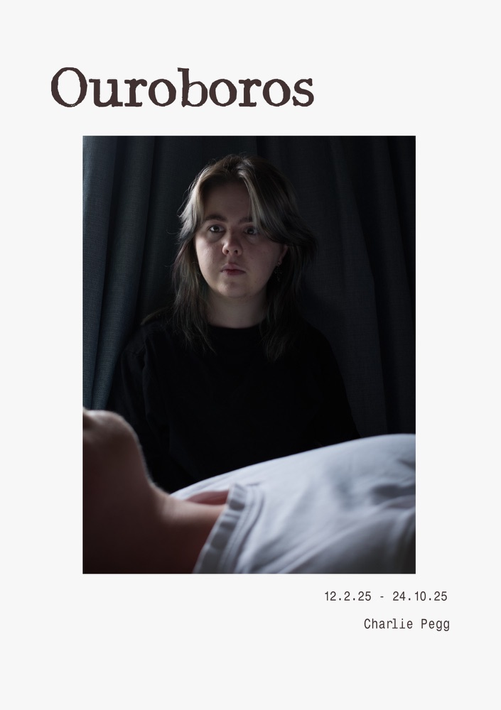

← Back to workThis is one of the projects I hold close to my heart as it was about the struggles with escapism I went through in 2025. When we were tasked with creating a photography zine where we were free to pick the subject matter it was about, I decided it was time to actually look at what I went through mentally. And thus, Ouroboros was born, a perzine all about my eight months of escapism from February 12th to October 24th, using notes I wrote during that time and experiences I remembered as the basis for how I would make it.
Skills utilised for this project: Photography using a Nikon D3500 - Affinity - Layout
The Ouroboros zine
Click to read through the zine
Notes explaining the thought behind the different photos
A walk into new life...
For this photo set, I wanted to show me walking away from my high school years with me walking away from the white shirt. I did this to show how it was meant to be the beginning of something new, but also so when the white shirt reappears, we can see that it is related to the past in some way.
Sunset
As my escapism slowly progressed, I found myself staying up later and later, to the point I would wake at 5pm and sleep at 7am. Sunset was shot as me holding up the moon, because the moon had become the equivalent of my sun during that time.
We dream of what we don't have, I dream of my life
Beyond the slow time warping I was experiencing, I also found that I actually craved my time in high school again because I had absolutely nothing to do. A common motif I had when I thought about it was of my past sleeping peacefully while I watched and lived through them because I had nothing to do despite me knowing I was really stressed in high school, but me doing nothing made me want the stress because it wasn't this empty life.
Someone needs an apology
During my time spent endlessly reliving my days, I found myself thinking about me when I was a child more and more. As I did, I kind of realised that there was actually a fair bit of hurt my inner child still carried that I didn't acknowledge because I kept pushing it away. I also kind of realised that part of that refusal to acknowledge it also led to my current situation where I couldn't figure out how to deal with my emotions anymore because I kept ignoring them. I did this photo specifically to acknowledge that bit that needed to hear it.
An unfortunate meeting
I had started wondering what my high school self would think if they met the me I had become. Would they be disappointed? Angry? Disgusted? I would've felt bad either way because regardless of what that piece of me thought, it would probably still be doomed to become this version of me anyway
So close to Heaven, so close to Hell
At a certain point, part of me wasn't sure how to feel about this anymore. While I was getting a bit sad sometimes before this, it was really starting to come through more. While I found it fun to spend time playing games, after a while I couldn't really enjoy them the same way anymore because everything was all the same. I was close to heaven as I was living what others dream of doing, but I felt like I was getting closer to hell because it began to feel miserable. I had my model pose similarly to the Michelangelo's painting of Adam and God, becuase it felt like my solution was right there, but I had to will to reach for it anymore.
Cognitive dissonance
By this point, I was becoming more and more miserable because of how the days felt more and more pointless. But despite my mind wanting to change my situation, I wasn't doing anything. It was cognitive dissonance, where I wanted to do something, but didn't have it in me to.
Destiny
I was starting to wonder if maybe some sort of fate had decided that this was just what life was going to be for me from now on, I was just destined to stay confined to my room and never leave my house as the days went by. Maybe my destiny was never to become anything at all.
Young Girl A
One day, while I was trying to sort out a job application at my friends request, I felt myself getting overwhelmed. Usually, if I just went and cried, it would help me feel better and then I could do whatever it was I needed to. However, it didn't work anymore. I cried and nothing felt differnt. I had watched myself slip away, and now I didn't care to try to stop it anymore. I titled this one 'Young Girl A' because that was the song I was listening to when this happened, and that song was also a song I related to a lot during that time.
I still want to be a part of this world
Even though I was giving up around now, it didn't mean I really wanted to disappear from the world, I just didn't feel like there was any other path for me anymore. This photo was inspired by the opening to the book 'The Invisible Life of Addie LaRue', where she keeps trying to write her name in the condensation because she wants to keep trying to be remembered by the world, but was cursed to be endlessly forgotten.
...A walk into same death...
At this point, I felt like maybe now the only thing that could happen to me was to just die. However, it wasn't something I was actively trying to do because I didn't really want to and it also felt like too much effort. It was more of a "guess this is my path" kind of thing. I had the skipping rope laid out like that so it could resemble the shape of a noose, but not actually be a noose to reflect what my headspace was like.
Damned
In my head, my fate was now to remain stuck in my escapism until death came or fate decided for something to change. For this one, I wanted to reference the movie Coraline because some people have mentioned that it can be used as a metaphor for escapism - what happens when you go into this small dream world and never come out? For me, it felt like I was letting the buttons be sown into my eyes and accepting a life of escapism.
Gifted child
This photo was based off of an experience I remembered. I was standing in the kitchen, staring out the window, and it felt like everything was slowly closing in and my mind was screaming at me to do anything, but I instead kept staring outside. I don't know when in the timeline this happened, I just know it happened.
...Either way, I find no success.
I chose to have the zine's final photo be this one because it felt like the best conclusion to the timeline. I didn't live, but at the same time, I didn't die, so overall nothing really happened on either front. And besides, at that point, I was now set in making sure I didn't completely give up because a very important friend of mine made me want to save myself so that they didn't think I lied when I told them how important they were to me. While it may not have been the perfect reason to decide to keep going, it was enough for me to resolve myself. Both the skipping rope and the shirt rest beside the main model, because while I was leaving that headspace, the months of escapism weren't going to go away easy. However, I needed to go forward anyway.